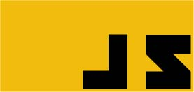
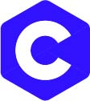
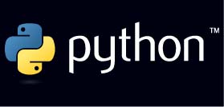

As linguagens mais usadas no mundo da programação
Java

Java é uma das linguagens de programação mais usadas no mundo. A primeira versão da linguagem foi lançada pela Sun Microsystems em 1995 e atualmente pertence à Oracle. É uma linguagem Orientada a Objetos e a principal linguagem de programação utilizada para desenvolver aplicativos para tablets e smartphones da plataforma Android. Também muito utilizada para desenvolvimento Web.
PHP

O PHP é a linguagem de programação mais usada no backend de sites. Tem gente que ama e tem gente que odeia, mas a verdade é que a maioria dos sites da internet são feitos com PHP. Isso se deve, em grande parte, aos gerenciadores de conteúdo (CMS) mais usados no mundo, tais como WordPress, Drupal, Joomla. A maioria dos blogs que você encontra na internet usa um desses gerenciadores de conteúdo.
JavaScript
Quase todas as páginas da internet tem um código em javascript. Costumo dizer que enquanto o HTML é a linguagem que estrutura uma página e o CSS a deixa bonita, o javascript faz a página funcionar. Todo programador web deve aprender javascript independente da linguagem utilizada no “backend”. Essa linguagem é responsável por executar scripts do lado do cliente, sem a necessidade de passar pela interpretação do servidor.
C#
O C# é a linguagem principal quando se fala de Microsoft. Desde serviços e plataformas web a dispositivos móveis que utilizam Windows Phone. Também é uma das linguagens usadas do motor gráfico de desenvolvimento de jogos Unity é o C#. Se você quer programar para Windows 7, 8, 10, etc. aprenda C#.
C
Muito rápido e poderoso, o C é utilizado para criar softwares para sistemas embarcados. Criada em 1972, muitos sistemas operacionais foram desenvolvidos em C e até os dias de hoje a linguagem continua sendo muito usada para desenvolvimento de sistemas operacionais, aplicativos, games e integração com o hardware.
Python
O Python é excelente para quem está começando. É uma linguagem que serve pra quase tudo e nos permite trabalhar mais rápido e integrar sistemas de forma eficaz. Python é livre e de código aberto, multiplataforma, orientada a objetos e de alto nível. Grandes empresas utilizam Python para tarefas críticas, tais como Google, Youtube e Netflix.
Ruby

O Ruby é uma linguagem simples de aprender, elegante, focada na produtividade, incrivelmente poderosa e totalmente livre. Ficou mais famoso pelo seu uso na internet através do framework Ruby on Rails, mas o Ruby pode ser usado para muitas outras coisas e a demanda por programadores de Ruby vem crescendo bastante nos últimos anos.
Visual Basic
O bom e velho VB ainda é muito utilizado para desenvolvimento desktop. Já vi muito software escrito em VB e embora muita gente acha que vem perdendo mercado, para o C# por exemplo, ainda tem muito sistema em VB que precisa de manutenção.
Objective-C

Esta é a linguagem principal para a plataforma da Apple como IOS e OS X. É uma linguagem de programação flexiva orientada a objeto que usa transmissão de mensagens no estilo Smaltalk e C. Como IPhone e IPad vende bastante, aprender Objective-C é uma boa opção para entrar no mercado de aplicativos mobile.